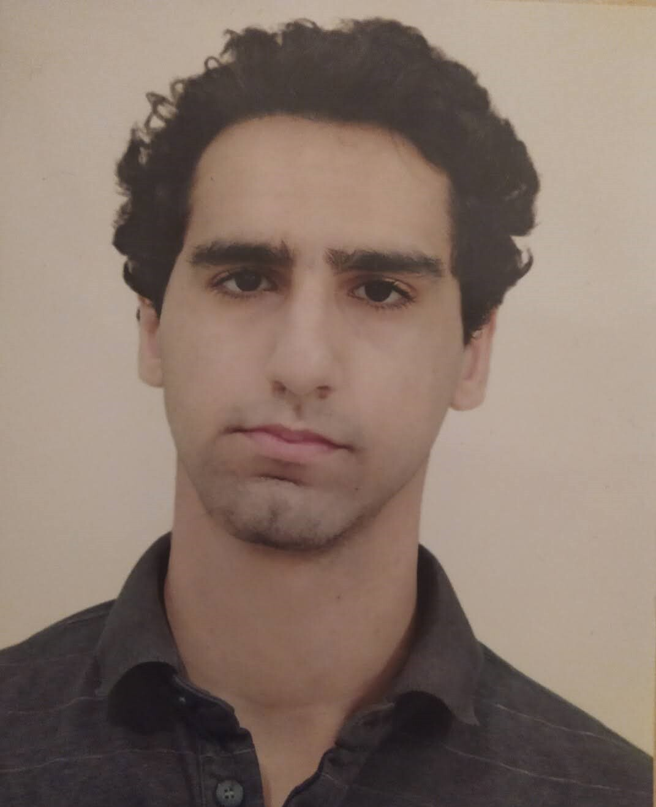
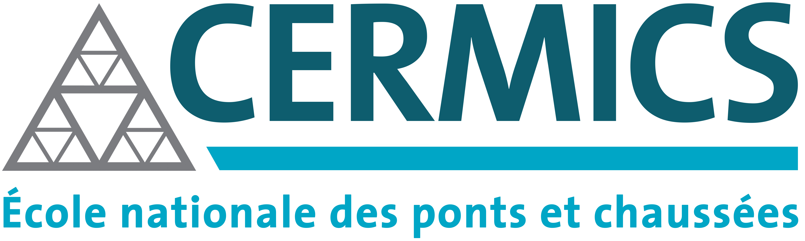
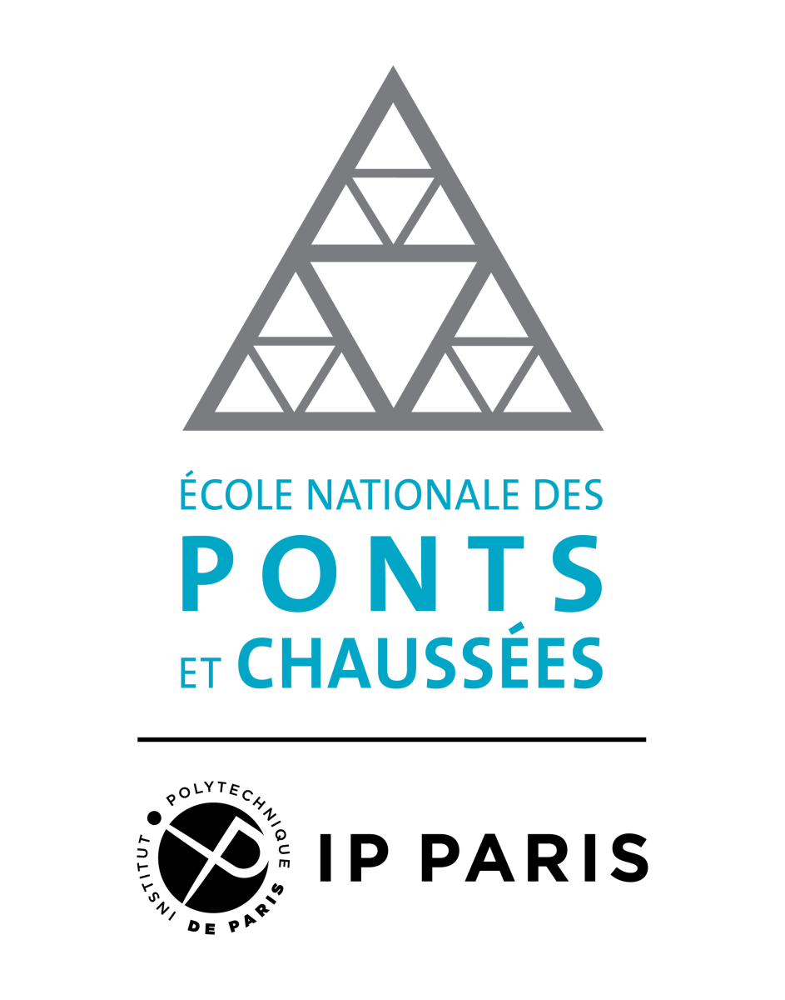

Nail Baloul
PhD Student in Mathematics
Ecole nationale des ponts et chaussées
About Me
Since October 2024, I am a PhD student in Applied mathematics at CERMICS (ENPC), working under Pierre Lissy (Junior Professor at ENPC), Thibault Liard (Associate Professor at Limoges University) and Amaury Hayat (Professor at ENPC). My research focuses on the reconstruction and the control of traffic flows using advanced mathematical techniques and machine learning tools. I aim to develop innovative methods that enhance our understanding and management of complex traffic systems.
Education
- Master 2 in Optimization, University Paris-Saclay, Ile-de-France, (September 2023 - September 2024)
- Master in Analysis, Partial Differrential Equations and Applications, University of Sciences and Technology, Algiers, (September 2021 - September 2023)
- Licence in Pure Mathematics, University of Sciences and Technology, Algiers, (September 2018 - September 2021)
Internships
- Research internship in Applied Mathematics, UMA, ENSTA Paris, Ile-de-France, (April 2024 - August 2024)
Under the supervision of Professor Sorin-Mihai Grad. Study of proximal algorithms for the resolution of constrained optimization problems.
- Research internship in Pure Mathematics, AMNEDP, University of Sciences and Technology, Algiers, (January 2023 - June 2023)
Under the supervision of Professor Ammar Khemmoudj. Study of the well-posedness of the equation of a viscoelastic plate equation with time delay.
If you'd like to view or download 2023 my master's thesis (french version) or my 2024 internship report (english version), you can do so via:
Download Internship report on Optimization (2024) (English version)
Téléchargez le mémoire de master en stabilisation d'EDP avec retard (2023) (version française)
If you'd like to view or download my CV, you can do so via:
Download CV (English version)
Téléchargez le CV (version française)
Contact
Email: nail.baloul@enpc.fr
GitHub: nailbaloul
Last updated: April 6, 2025